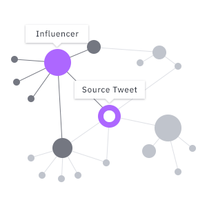

TRACEMAP
Fact-checking made easy.
Enter a tweets Url from Twitter.
The public beta will be online soon.
Subscribe to the newsletter and stay up to date.
To use the tool, please switch to a bigger screen.
↳ How It Works
↳ Visualization
↳ Analysis
↳ Collective Fact Checking
↳ Stay Up To Date
{{line}}

How it works
TraceMap is an open source web tool that allows you to visualize the spread of a Tweet, analyze its trustworthiness and to engage with others in fighting misinformation.
1. Find a tweet on Twitter you would like to explore. Click on the dropdown menu on the top right of the tweet.
2. Choose "Copy link to tweet" and paste the URL into the search field of TraceMap.
Visualization
The interactive interface allows you to visualize how tweets flow. It is designed to directly reveal a tweet’s outreach and to see which users contributed to spreading them.
TraceMap exposes implicit and hidden diffusion mechanisms. Interactive graphs - tracemaps - will allow you to track the spreading of tweets. For example, you will be able to spot the users who are more influential and more densely connected.
Analysis

Investigate what you read with the help of a series of functionalities. Interactive features such as finding users' most viral tweets will equip you to become an investigative fact-checker.
After generating a tweet’s tracemap, you can obtain informative statistics and analyze the most influential profiles who contribute to the diffusion of a tweet. With more information at hand, you will be able to form a more solid opinion about the trustworthiness of news you are reading.
Collective Fact Checking
Soon you will be able to help others interpret tweets by adding useful tags and links to external resources. At the same time you will be able to review the annotations of others to interpret what you read.
In order to create a platform on which people can trust each other, we intend to provide a cross-checking mechanism, that is, a system of fact-checking badges for users that correctly classify content (e.g. satire, sarcasm, fake, wrong context, etc). This way, we want to make sure that the tags shown are all valid and that our platform is protected against bots and trolls.
Stay up to date
TraceMap is still in closed beta, but we are constantly pushing things forward. Be one of the first to know about new features and releases of TraceMap.
Follow us: